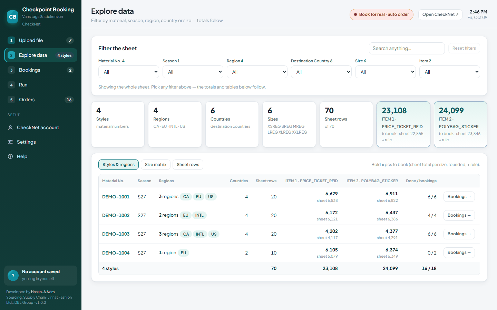
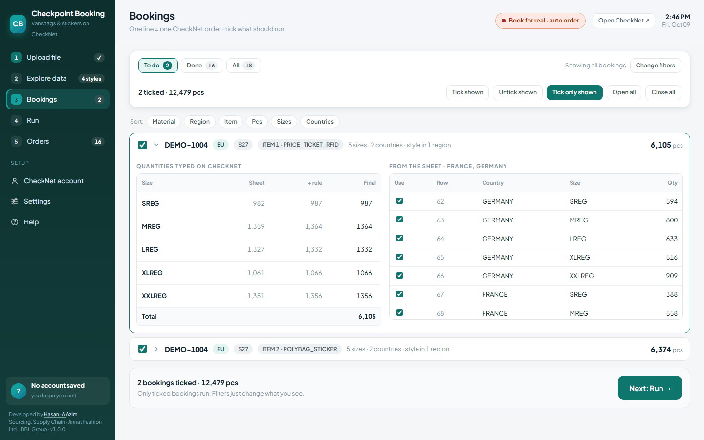
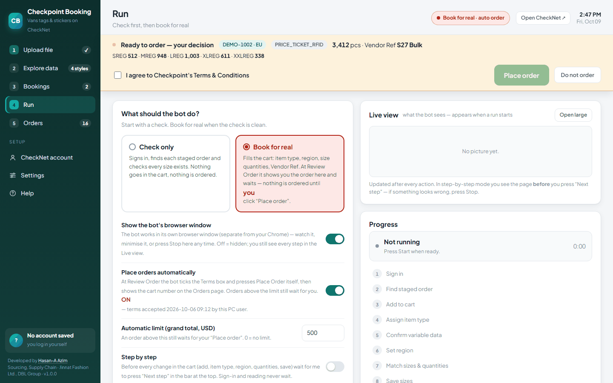
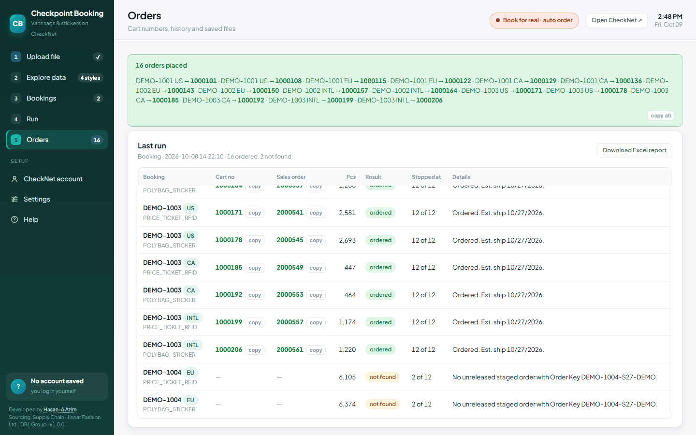

Price tickets and polybag stickers for every style are booked on Checkpoint's online ordering portal — one order per style, region and item, each typed in by hand from the buyer's sheet. I built the tool that reads the sheet and places those orders itself.
Simple work, repeated many times, where one wrong number is a wrong label.
The buyer's booking sheet lists every style by region, destination country and size, with a quantity for each label item. Turning that into orders means adding up every size across all the countries of a region, rounding it, adding a small allowance, and then — on the portal — finding the staged order, adding it to the cart, assigning the item type, choosing the region, typing each size, saving, checking out, entering the vendor reference and placing the order.
That is about a dozen steps for one booking, and a single sheet can hold more than fifty bookings. Every step is clear, and every one is the same each time. The risk is not in any single step; it is in doing all of them, fifty times over, without one typing slip, one missed booking or one order placed twice.
The sheet is the source of truth, and the person keeps the decision to spend. The tool does the adding up and the typing; it never decides on its own to order more than it was asked to.
A local web dashboard that drives a real browser.
It runs on my own PC. A small Python server shows the dashboard in the browser, and a separate, visible browser window does the work on the portal, so I can watch every click. The portal password is kept in the Windows Credential Manager, never in a file. I load the booking sheet as it arrives from the buyer — any number of item columns — and every booking is laid out before anything is touched.

One line on the Bookings page is one order on the portal. Open it and you see exactly what will be typed, size by size, next to the sheet rows it came from. Any quantity can be corrected before the run, and a corrected value is marked so it is never mistaken for the calculated one.

Five phases. The last one is the one that matters.
Finds the columns by their header names rather than their position, so a sheet with two items or five items reads the same way. One booking is made per material, season, region and item.
Adds each size across every country of the region and rounds it, then adds the allowance: 10 pieces when the total is under 100, otherwise 5. The rule is shown beside every number, so it can be checked rather than trusted.
Finds the staged order for that style, adds it to the cart, assigns the item type, chooses the region and types each size. If a size on the portal is not on the sheet, the bot removes that line instead of guessing a number for it.
Enters the vendor reference, reads the order back from the review page, and shows it on the dashboard: style, region, item, pieces per size. Nothing is ordered until I press “Place order”, unless I have switched automatic ordering on myself.
Success means the portal's confirmation page, with a cart number and a sales order number. The bot reads both from that page and records them at once. No confirmation, no “ordered”.

An order placed twice costs money. An order placed wrong costs labels. So the design question was always “what should it do when it is not sure?”
A check-only run signs in, finds every staged order and confirms every size exists — and puts nothing in the cart. Problems show up before any order is at stake.
A booking with a cart number is locked. If “Place order” was pressed but no confirmation was seen, it is locked too and flagged for a person to check, so a re-run can never repeat it.
If the portal has no staged order for a booking, that booking is reported as not found and the run moves on. If something fails with an order half-filled in the cart, it stops, so the next booking can never be mixed into it.
Placing orders without asking is off until I switch it on and accept the portal's terms myself, and even then only up to a set order value. Anything above that waits for me.
The most dangerous moment is right after success. Early on, an order went through while the log file was open in Excel; saving the result failed, and the run lost track of an order it had just placed. Now the result is recorded first, before the email or anything else; saving can never stop a run; and if the log is locked, the result goes to a separate file instead. Record the proof, then do everything else.
A run nobody can check has not finished.
The Excel report is rewritten after every booking, not only at the end, so a stopped run still leaves a complete record of everything it did. It has three sheets: the results with cart and sales order numbers; a copy of the uploaded sheet with a “Qty Update” column beside each item, marked Done, so it can be handed straight back; and the plan of what was typed.

After the first full sheet I checked every booking against the portal's own order history, item by item. All 36 were there; none was missing.
It is at version 1.0.0 and in daily use. Between 6 and 8 October 2026 it placed 81 orders for 118,313 pieces, across 15 styles, two label items and four regions. The largest run took a sheet of 54 bookings: 46 were ordered and 8 were skipped because the portal had no staged order for them — in about 70 minutes, unattended. Those 8 come back on the report, ready for the next run.
Build the proof first and the speed second. Every part of this tool that I trust is a part that reads its result back from the portal, instead of assuming that a click did what it was meant to do.
← Back to the portfolio · Get in touch — I am glad to walk through the system in detail.